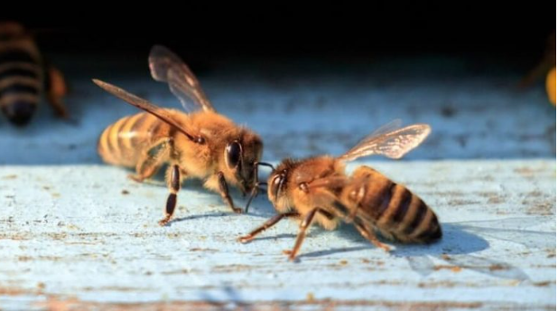

las abejas son insectos sociables que se comunican de manera compleja pero interesante y tambien su comunicacion es esencial para la supervivencia y el exitpo de la colonia

hay varias formas en las que se comunican como atravez de la danza,feromonas,vibraciones es un tema muy interesante como se comunican y tambien muy largo por lo que abajo hay mas informacion
los tipos de comunicacion entre abejas inicio